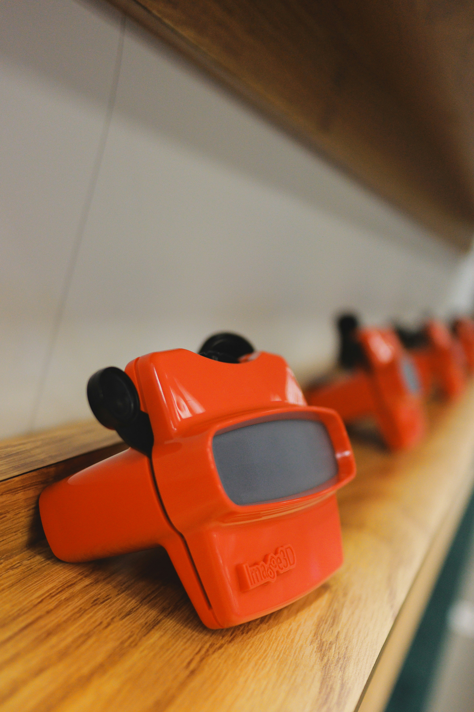

Η ενασχόληση με τις παλιές συλλογές παιχνιδιών είναι, πάνω από όλα, ένα ταξίδι στον χρόνο και στις αναμνήσεις της παιδικής ηλικίας. Για πολλούς συλλέκτες, κάθε αντικείμενο στο ράφι από τα βαριά μεταλλικά αυτοκινητάκια μέχρι τις πρώτες φιγούρες δράσης δεν είναι απλώς ένα άψυχο πλαστικό, αλλά ένας συνδετικός κρίκος με μια εποχή αθωότητας. Η μυρωδιά του παλιού χαρτιού στις συσκευασίες και η αίσθηση των υλικών που χρησιμοποιούνταν πριν από δεκαετίες ξυπνούν συναισθήματα που τα σύγχρονα, ψηφιακά παιχνίδια αδυνατούν να προσφέρουν.

Πέρα από τη συναισθηματική αξία, οι παλιές συλλογές αποτελούν πλέον και ένα σοβαρό πεδίο επένδυσης και ιστορικής διατήρησης. Παιχνίδια από τις δεκαετίες του '70, του '80 και του '90, ειδικά αν βρίσκονται στην αρχική τους σφραγισμένη συσκευασία, θεωρούνται σπάνια κειμήλια και η αξία τους σε δημοπρασίες μπορεί να φτάσει σε δυσθεώρητα ύψη. Οι συλλέκτες λειτουργούν συχνά ως άτυποι επιμελητές μουσείων, φροντίζοντας να διατηρηθεί η πολιτιστική κληρονομιά μιας περιόδου όπου ο σχεδιασμός των παιχνιδιών ήταν τολμηρός και γεμάτος χαρακτήρα.

Ιδιαίτερη θέση σε αυτές τις συλλογές κατέχουν οι πρώτες κονσόλες και τα βιντεοπαιχνίδια, που σημάδεψαν την αυγή της ψηφιακής διασκέδασης. Οι κίτρινες κασέτες, τα εμβληματικά χειριστήρια και οι μεγάλες, εικονογραφημένες κούτες των οικιακών υπολογιστών της εποχής, όπως της Amiga ή του Commodore 64, διηγούνται την ιστορία της τεχνολογικής εξέλιξης. Για τον κάτοχο μιας τέτοιας συλλογής, η διαδικασία του να φυσήξει μια κασέτα για να λειτουργήσει ή να ακούσει τον ήχο της φόρτωσης είναι μια ιεροτελεστία που τιμά τις ρίζες του σύγχρονου gaming.

Τέλος, η γοητεία των παλιών παιχνιδιών έγκειται στην αυθεντικότητα και τη χειροπιαστή τους φύση. Σε έναν κόσμο που γίνεται όλο και πιο ψηφιακός και εφήμερος, η κατοχή μιας φυσικής συλλογής προσφέρει μια αίσθηση μονιμότητας και σύνδεσης με το παρελθόν. Οι συλλέκτες συχνά μοιράζονται το πάθος τους σε κοινότητες, ανταλλάσσοντας κομμάτια και ιστορίες, αποδεικνύοντας ότι αυτά τα "παλιά πράγματα" έχουν τη δύναμη να φέρνουν τους ανθρώπους κοντά, θυμίζοντάς μας τη σημασία του παιχνιδιού σε κάθε στάδιο της ζωής μας.
